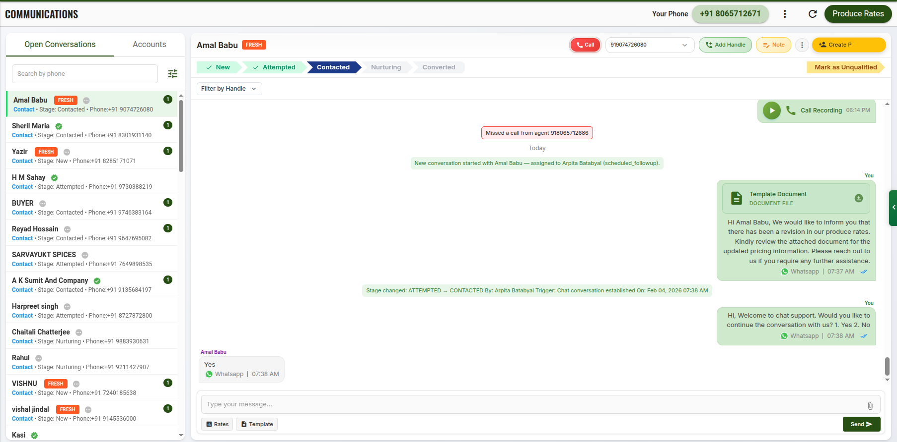

The new Conversations module represents a fundamental shift in how agents handle customer enquiries inside the platform. The previous communication experience was functionally complete, but agents were required to move across multiple screens and sections to perform basic actions such as calling, updating status, creating follow-ups, creating opportunities and viewing customer information. Through observation of real agent workflows, call handling behaviour and lead progression patterns, it became clear that the main source of friction was frequent context switching during live customer interactions. This caused delays, missed actions and incomplete follow-ups, especially when agents had to leave the conversation view to complete operational steps and then return back to continue the discussion.
The new Conversations workspace has therefore been designed as an operational execution layer, not a messaging screen. Instead of separating WhatsApp, calling, lead actions and commercial actions into parallel flows, the interface now places the agent's real working priorities at the centre of the screen — contact, qualify, progress and convert — while keeping every supporting action immediately available in the same context.
Calling has been made an explicit primary action, rather than a secondary channel option, because real conversion in this business is driven predominantly through live voice interaction. This removes ambiguity for agents and eliminates delay between engagement intent and execution. Similarly, high-impact actions such as Create Profile and Create Opportunity are surfaced directly in the conversation header to remove discovery friction and ensure that critical commercial steps are taken at the moment of customer engagement, not deferred due to navigation complexity.
Small interaction decisions were intentionally introduced to improve execution accuracy and reduce cognitive load during live handling. For example, displaying participant names directly inside the conversation stream allows agents to immediately identify who is speaking when multiple handles or contacts exist under the same account. While visually minimal, this materially reduces misinterpretation and follow-up errors in multi-contact scenarios. Handle-level filtering inside a conversation enables agents to isolate specific contact streams without losing the overall customer context, which is essential when a single business is represented through multiple numbers or messaging endpoints.
The overall layout, interaction hierarchy and action placement were derived from analysing how agents actually move through leads — from first contact to qualification, nurturing and conversion — and restructuring the interface to follow that real operational flow rather than module boundaries.
Old Communication Module (Contact-centric)

New Conversation Module (Conversation-centric)
| Dimension | Old Communication Module (Contact-centric) | New Conversation Module (Conversation-centric) |
|---|---|---|
| Primary business object | Contact | Conversation (each enquiry is its own record) |
| How a new enquiry is handled | A new enquiry from an existing customer updates the same contact | Every new enquiry creates a new conversation |
| Where status is stored | Disposition status is stored against the contact | Stage is stored against the conversation |
| Effect of multiple enquiries from the same customer | Each new enquiry overwrites the previous disposition status of the contact | Each enquiry keeps its own lifecycle and outcome independently |
| Example impact | First enquiry marked Interested, second enquiry marked Prices Too High → contact status becomes Prices Too High and the first positive enquiry is lost | First enquiry remains tracked as its own conversation; second enquiry is tracked separately with its own stage and outcome |
| Core status model | Large flat disposition list mixing intent, objection, contactability and outcome (Untouched, Potential, RNR, Need Discount, Prices Too High, Dropped, etc.) | Small controlled lifecycle stages: New → Attempted → Contacted → Nurturing → Converted |
| Meaning of status | Mixed meaning (execution progress + objection + outcome in one field) | Pure execution lifecycle only |
| Who controls status movement | Mostly manual by the agent | System-driven and rule-based (except final conversion actions) |
| When agent calls and the customer does not answer | Agent manually sets disposition to RNR 1 / RNR 2 / RNR 3 | System automatically moves the conversation to Attempted |
| Task creation after no answer | Task is created but contact disposition becomes RNR | Scheduled follow-up task is created and the conversation remains active in Attempted stage |
| When agent successfully connects with the customer | Agent manually changes disposition to Contacted | System automatically moves the stage from Attempted to Contacted |
| After a successful contact | Agent may or may not create opportunity, follow-up or mark unqualified | System forces the agent to take a next action through a mandatory popup |
| Enforcement of next step after contact | No enforcement – the agent can end the interaction without any business outcome being recorded | Mandatory choice: create follow-up task, mark unqualified, or profile / proceed for opportunity |
| Ability to control execution discipline | Not controlled by the system | Actively controlled and enforced by the system |
| Ability to track attempts per enquiry | Not possible (attempts are flattened into the contact record) | Fully possible per conversation |
| Ability to measure contact rate (attempted → contacted) | Not reliable | Directly measurable per conversation |
| Ability to measure conversion per enquiry | Not possible | Directly supported |
| Ability to analyse objection patterns (price, discount, credit, etc.) | Distorted, because dispositions overwrite each other on the contact | Accurate, because each conversation carries its own outcome context |
| Pipeline and sales flow visibility | Limited and inconsistent | End-to-end lifecycle visibility per enquiry |
| Reporting reliability | Low – multiple business events are collapsed into a single state | High – each business event is represented as its own lifecycle |
| Core design assumption | One customer equals one sales outcome | One enquiry equals one sales lifecycle |
| Business impact | Data loss, overwritten intent, inaccurate reports and weak execution control | Accurate sales analytics, enforced follow-up discipline and reliable conversion reporting |
Unified Conversations Execution Workspace NEW
The Conversations module is delivered as a consolidated execution workspace that enables agents to handle customer communication, pipeline movement, opportunity creation, and order execution from a single operational screen.
The workspace unifies conversation handling, customer context, commercial actions, and lifecycle control without requiring navigation across multiple modules. This directly reduces operational latency, tool switching, and execution errors during active customer engagement.
The left panel provides a controlled working queue through Open Conversations, while historical and closed customer interactions are operationally isolated under Accounts, ensuring agents focus only on active and revenue-relevant conversations.
Usage Instructions
- Agents work from the Open Conversations tab to handle all active conversations
- Closed and historical conversations are available under the Accounts tab
Agent-Oriented Conversation Filters for Execution Focus NEW
The conversation list includes a structured set of filters that allow agents to dynamically narrow down conversations based on how they actually execute their daily work. Instead of browsing a flat inbox, agents can isolate conversations by operational context such as source, stage, type and lead status.
This filtering layer was designed after observing that agents typically organise their work around execution priorities — such as pending follow-ups, fresh enquiries, active negotiations or nurturing conversations — rather than around customer profiles. In the previous communication flow, agents were required to manually scan long mixed lists, which increased response delays and caused missed follow-ups.
By aligning filters directly with conversation attributes, the system enables agents to instantly build a focused execution view that matches their working style, workload and daily targets. This significantly reduces cognitive load, context switching and queue scanning time during live operations.
This design ensures that agents work from a continuously prioritised execution queue rather than from a static inbox, improving follow-up discipline, response speed and stage progression consistency across teams.
End-to-End Conversation Lifecycle with Nurturing Stage NEW
The conversation lifecycle is standardized and executed directly from the conversation header:
The introduction of the Nurturing stage establishes a formal operational state for leads that are actively being worked but are not yet ready for conversion. This eliminates ambiguity between "contact completed" and "deal progressing" and provides a more accurate and controllable pipeline.
From a reporting and governance standpoint, this prevents artificial inflation of contacted or converted stages and significantly improves pipeline quality.
Usage Instructions
- Stages are progressed automatically based on call outcomes
- Can be moved to Nurturing when continued engagement is required before conversion
Embedded Call Control with Automatic Stage Progression ENHANCED
Calling is embedded directly within the conversation header and is fully integrated with the lifecycle engine. The system automatically updates conversation stages based on call results, ensuring that pipeline progression is driven by actual engagement behavior rather than manual status updates.
This enforces operational discipline and protects data accuracy across sales performance and activity reports.
Usage Instructions
- Initiate calls using the Call button in the conversation header
- If the call is not answered, the stage is set to Attempted
- If the call is answered, the stage is set to Contacted
Conversation-Centric Communication with Explicit Call Execution NEW
The Conversations workspace no longer separates communication into independent channels. Instead, all customer interactions are managed through a single conversation context, with calling exposed as a primary execution action.
The Call action is placed directly in the conversation header to reflect its operational importance in real sales workflows, enabling agents to initiate voice interactions immediately without navigating between modules or modes.
WhatsApp messaging remains embedded inside the same conversation stream, ensuring that all customer communication—regardless of medium—remains unified under one continuous engagement and execution context.
This design removes channel-driven workflows and replaces them with a conversation-driven execution model, significantly reducing context switching, operational friction, and delays during live customer handling.
Usage Instructions
- Use the Call button in the conversation header to initiate a voice interaction
- Use the message composer to continue WhatsApp communication within the same conversation
- All communication activity is recorded and tracked under the same conversation timeline
Direct Opportunity and Order Execution from Conversation NEW
Agents can initiate both opportunity creation and order creation directly from the conversation header. This removes cross-module navigation and ensures that commercial execution happens immediately while the customer context is still active, significantly improving conversion turnaround time.
From an operational standpoint, this also reduces data re-entry, pricing mismatches, and order initiation delays.
Usage Instructions
- Use Create Opportunity or Create Order in the conversation header to initiate commercial actions for the active customer
Multi-Handle and Existing Customer Account Linking with Ownership Control NEW
The Conversations workspace supports linking multiple contact handles (such as multiple phone numbers or messaging handles) to a single customer and business account directly from the active conversation.
In addition to consolidating multiple handles, the system also supports linking a newly contacted person to an existing business/customer account when the contact already belongs to an existing customer in the system. This ensures that all conversations, historical interactions, and commercial activity are maintained under a single business entity instead of creating fragmented or duplicate customer records.
- If the existing customer account is already handled by the same agent, the linking can be completed instantly
- If the existing customer account is owned by a different agent, the system enforces a controlled handover by requiring the conversation to be transferred to the owning agent
- In addition, when an agent raises a merge request to link a contact or conversation to an existing customer account, the request must be approved by an administrator before the merge is completed
This design prevents conflicting follow-ups, duplicated negotiations, and inconsistent pricing or commitments for the same business, while preserving a clean customer ownership model across the sales organization.
Usage Instructions
- Click Add Handle to link additional contact numbers or communication handles to the same customer
- When the contacted person belongs to an existing business/customer account:
- If the existing customer is owned by the same agent, the contact can be linked directly to that business
- If the existing customer is owned by another agent, the system shows the Transfer option and the conversation must be transferred to complete the linking
Controlled Conversation and Account Transfer with Follow-Up Governance NEW
Conversations can be transferred to another agent along with the associated customer account, linked opportunities, and pending follow-ups. This creates a structured handover mechanism that eliminates loss of ownership, dropped follow-ups, and broken accountability during agent reassignments.
The explicit handling of pending follow-ups introduces operational discipline and ensures that outstanding activities are either reassigned, closed, or intentionally removed, supporting auditability and operational transparency.
Usage Instructions
- When transferring a conversation, select the target agent and choose how to handle pending follow-ups:
- Transfer to new agent
- Mark as done
- Delete
- The conversation, customer account, linked opportunities, and follow-ups are included in the transfer
Internal Notes for Operational Context NEW
Internal notes can be added directly inside a conversation and are visible only to internal users. This allows agents and supervisors to capture negotiation context, qualification insights and operational remarks that must persist across follow-ups and ownership changes, without exposing any internal information to customers.
When the Notes option is accessed, a dedicated side panel opens within the conversation workspace, displaying the complete history of notes related to that conversation in one place. This enables agents to quickly review past context before continuing communication and prevents loss of important operational information across multiple interactions.
Usage Instructions
- Click the Note option in the conversation header to open the notes side panel
- View all previously added notes in the panel and add new internal remarks as required
Inline Qualification Control for Non-Buyers NEW
Conversations that do not represent genuine commercial opportunities can be immediately marked as unqualified. This removes non-revenue interactions from the active execution pipeline and protects sales capacity by ensuring agents focus only on valid opportunities.
It also improves data quality for pipeline and performance reporting.
Usage Instructions
- Click Mark as Unqualified to exclude the conversation from active sales workflows
Handle-Level Filtering within a Conversation NEW
The conversation workspace supports filtering activity and messages by individual contact handles. This allows agents to clearly track communication streams when a customer has multiple linked contact points, avoiding confusion during follow-ups.
Usage Instructions
- Use Filter by Handle to view messages and activities for a selected contact handle
Embedded Messaging with Templates and Rate Sharing ENHANCED
The message composer is integrated directly into the execution workspace and supports sending predefined templates and live rate information. This enforces standardized communication formats, reduces response preparation time, and prevents inconsistent or outdated pricing communication during active negotiations.
Usage Instructions
- Use Template to send predefined responses
- Use Rates to select and send current rate information to the customer
Integrated Customer Panel (Right-Side Panel) NEW
The right-side customer panel provides a real-time operational view of the customer and the ongoing sales process. It consolidates:
Some inbound lead sources do not provide a country code along with the phone number. In the previous system, agents were required to create a new contact entry with the correct country code in order to proceed, which frequently resulted in duplicated contacts for the same customer.
In the updated Conversations workspace, agents can directly edit an existing contact handle and add or correct the country code without creating a new contact or duplicating the handle. This ensures that contact identity remains consistent while still allowing agents to normalise phone numbers for calling and WhatsApp communication.
- Customer profile and ownership
- Conversation status
- Scheduled follow-ups
- Order history
- Opportunity items and deal values
This removes the need to navigate across multiple modules during active engagement and enables agents to make informed decisions while communicating with the customer. From a managerial and governance perspective, this enforces a standardized view of customer data and deal context across all agents.
Usage Instructions
- Click the green arrow button to open the customer panel and view profile details, conversation status, follow-ups, order history, and opportunities
Smart Account Matching During Profile Creation NEW
When an agent creates a customer profile from a conversation, the system automatically checks for existing accounts with the same or similar name and presents matching account suggestions in real time.
This behaviour was introduced to prevent duplicate customer profiles and to eliminate manual account clean-up and post-facto merging. In the earlier flow, agents frequently created separate customer records for the same business or person because no contextual visibility of existing profiles was provided during profile creation.
By surfacing existing accounts at the moment of profiling, the system allows agents to immediately associate the conversation with the correct existing account and continue execution without breaking context.
At the same time, the workflow does not force merging. If the enquiry genuinely belongs to a different customer or a separate business entity, agents can intentionally create a new account profile and keep the lead isolated as an independent profile.
This controlled matching approach maintains data quality without blocking valid new customer creation, ensuring both operational flexibility and long-term account accuracy.
In the previous system, GST information was collected independently and was not structurally linked to the customer profiling workflow. As a result, GST details were often missing, incomplete or stored without a clear association to the customer’s business identity.
In the new profiling workflow, GST details are captured as part of profile creation itself and are directly linked to the business profile along with the registered business address. This ensures that statutory and commercial identity data is created at the same time as the customer account, rather than as a disconnected data entry step.
GST and business address fields are displayed only when the lead is being profiled as a Business account. For Individual profiles, these fields are intentionally hidden to avoid collecting irrelevant regulatory information and to keep the profiling flow minimal and accurate.
In addition to name-based matching, the profiling flow also allows agents to merge a customer with an existing account that may be present in the system under a different name or business variation. This supports real-world scenarios where the same customer may appear with multiple naming formats across enquiries.
For data ownership and operational control, merging is permitted only when the existing account belongs to the current agent. If the matched account is owned by another agent, the system displays a transfer request option directly within the profiling flow. The agent must request ownership transfer before the merge can be completed.
This ownership-aware merge mechanism prevents unauthorised account modifications while still enabling controlled consolidation of duplicate customer records.
Usage Instructions
- Click Create Profile from a conversation after the customer is contacted
- If similar account names already exist, the system displays suggested existing accounts
- Select an existing account to associate and merge the conversation with that account
- Or select Create New Profile to create a separate account for this customer
Guided Sales Execution Through Next Steps NEW
The Next Steps section provides system-driven guidance to the agent by recommending concrete actions such as creating an order, scheduling follow-ups, or updating products and pricing.
This introduces a guided sales execution model that reduces training dependency for new agents and enforces standardized completion of the sales process across teams. From a rollout and adoption perspective, this significantly accelerates onboarding and improves consistency of operational behavior.
Usage Instructions
- Use the Next Steps section to follow recommended actions such as order creation, follow-up scheduling, and product or pricing updates